СП 439.1325800.2018 «Здания и сооружения. Правила проектирования аварийного осве»
О документе: разработчики, утверждение, регистрация, ключевые слова
-
1 ИСПОЛНИТЕЛИ -Федеральное государственное бюджетное учреждение «Научно-исследовательский институт строительной физики Российской академии архитектуры и строительных наук» (НИИСФ РААСН), Общество с ограниченной ответственностью «ЦЕРЕРА-ЭКСПЕРТ» (ООО «ЦЕРЕРА-ЭКСПЕРТ»)
2 ВНЕСЕН Техническим комитетом по стандартизации ТК 465 «Строительство»
3 ПОДГОТОВЛЕН к утверждению Департаментом градостроительной деятельности и архитектуры Министерства строительства и жилищнокоммунального хозяйства Российской Федерации (Минстрой России)
4 УТВЕРЖДЕН приказом Министерства строительства и жилищнокоммунального хозяйства Российской Федерации от 26 ноября 2018 г. № 747/пр и введен в действие с 27 мая 2019 г.
5 ЗАРЕГИСТРИРОВАН Федеральным агентством по техническому регулированию и метрологии (Росстандарт)
В случае пересмотра (замены) или отмены настоящего свода правил соответствующее уведомление будет опубликовано в установленном порядке. Соответствующая информация, уведомление и тексты размещаются также в информационной системе общего пользования - на официальном сайте разработчика (Минстрой России) в сети Интернет
© Минстрой России, 2018
Настоящий нормативный документ не может быть полностью или частично воспроизведен, тиражирован и распространен в качестве официального издания на территории Российской Федерации без разрешения Минстроя России
Дата введения - 2019-05-27
УДК 721:535.241.46:006.354(083.74) ОКС 91.160.01
Ключевые слова: здания и сооружения, аварийное освещение, правила проектирования, эвакуационное освещение, резервное освещение, антипаническое освещение, знаки безопасности
Введение
6 ВВЕДЕН ВПЕРВЫЕ
Настоящий свод правил разработан в соответствии с Федеральным законом от 30 декабря 2009 г. № 384-ФЗ «Технический регламент о безопасности зданий и сооружений» и в развитие СП 52.13330.2016 «СНиП 23-05-95* Естественное и искусственное освещение».
Настоящий свод правил разработан авторским коллективом: федеральное государственное бюджетное учреждение «Научноисследовательский институт строительной физики Российской академии архитектуры и строительных наук» (канд. техн. наук И.А. Шмаров , Л.В. Бражникова ); ООО «ЦЕРЕРА-ЭКСПЕРТ» ( Е.А. Литвинская ) при участии Нижегородского государственного технического университета им. Р.Е. Алексеева (канд. техн. наук Е.Б. Солнцев , канд. техн. наук О.Ю. Малафеев ), Общества с ограниченной ответственностью «Белый свет 2000» ( С.Ю. Горюшин , В.П . Ипатов ), Общества с ограниченной ответственностью «УСП Компьюлинк» ( В.В. Чернов ).
СП 439.1325800.2018
Правила проектирования аварийного освещения Buildings and structures. Emergency lighting design
1Область применения
2Нормативные ссылки
В настоящем своде правил использованы нормативные ссылки на следующие документы:
ГОСТ 12.4.026-2015 Система стандартов безопасности труда. Цвета сигнальные, знаки безопасности и разметка сигнальная. Назначение и правила применения. Общие технические требования и характеристики. Методы испытаний
ГОСТ 14254-2015 (IEC 60529:2013) Степени защиты, обеспечиваемые оболочками (Код IP)
ГОСТ 31565-2012 Кабельные изделия. Требования пожарной безопасности
\_\_\_\_\_\_\_\_\_\_\_\_\_\_\_\_\_\_\_\_\_\_\_\_\_\_\_\_\_\_\_\_\_\_\_\_\_\_\_\_\_\_\_\_\_\_\_\_\_\_\_
Издание официальное
ГОСТ IEC 60331-21-2011 Испытания электрических и оптических кабелей в условиях воздействия пламени. Сохранение работоспособности. Часть 21. Проведение испытаний и требования к ним. Кабели на номинальное напряжение до 0,6/1,0 кВ включительно
ГОСТ IEC 60332-1-2-2011 Испытания электрических и оптических кабелей в условиях воздействия пламени. Часть 1-2. Испытание на нераспространение горения одиночного вертикально расположенного изолированного провода или кабеля. Проведение испытания при воздействии пламенем газовой горелки мощностью 1 кВт с предварительным смешением газов
ГОСТ IEC 60598-2-22-2012 Светильники. Часть 2-22. Частные требования. Светильники для аварийного освещения
ГОСТ IEC 60924-2012 Аппараты пускорегулирующие электронные, питаемые от источников постоянного тока, для трубчатых люминесцентных ламп. Общие требования и требования безопасности
ГОСТ ISО 3864-1-2013 Графические символы. Сигнальные цвета и знаки безопасности. Часть 1. Принципы проектирования знаков и сигнальной разметки
ГОСТ Р 12.2.143-2009 Система стандартов безопасности труда. Системы фотолюминесцентные эвакуационные. Требования и методы контроля
ГОСТ Р 50571.5.51-2013/МЭК 60364-5-51:2005 Электроустановки низковольтные. Часть 5-51. Выбор и монтаж электрооборудования. Общие требования
ГОСТ Р 50571.5.52-2011/МЭК 60364-5-52:2009 Электроустановки низковольтные. Часть 5-52. Выбор и монтаж электрооборудования. Электропроводки
ГОСТ Р 50571.5.56-2013/МЭК 60364-5-56:2009 Электроустановки низковольтные. Часть 5-56. Выбор и монтаж электрооборудования. Системы обеспечения безопасности
ГОСТ Р 53780-2010 (ЕН 81-1:1998, ЕН 81-2:1998) Лифты. Общие требования безопасности к устройству и установке
ГОСТ Р 55842-2013 (ИСО 30061:2007) Освещение аварийное. Классификация и нормы
ГОСТ Р МЭК 60331-11-2012 Испытания электрических и оптических кабелей в условиях воздействия пламени. Сохранение работоспособности. Часть 11. Испытательное оборудование. Воздействие пламени температурой не менее 750 °С
ГОСТ Р МЭК 60598-1-2011 Светильники. Часть 1. Общие требования и методы испытаний
СП 6.13130.2013 Системы противопожарной защиты. Электрооборудование. Требования пожарной безопасности
СП 52.13330.2016 «СНиП 23-05-95* Естественное и искусственное освещение»
СП 54.13330.2016 «СНиП 31-01-2003 Здания жилые многоквартирные»
СП 56.13330.2011 «СНиП 31-03-2001 Производственные здания» (с изменением № 1)
СП 113.13330.2016 «СНиП 21-02-99* Стоянки автомобилей»
СП 118.13330.2012 «СНиП 31-06-2009 Общественные здания и сооружения» (с изменениями № 1, № 2)
СП 158.13330.2014 Здания и помещения медицинских организаций. Правила проектирования (с изменением № 1)
СП 251.1325800.2016 Здания общеобразовательных организаций. Правила проектирования (с изменением № 1)
СП 252.1325800.2016 Здания дошкольных образовательных организаций. Правила проектирования
СП 253.1325800.2016 Инженерные системы высотных зданий
СП 256.1325800.2016 Электроустановки жилых и общественных зданий.
Правила проектирования и монтажа (с изменением № 1)
СП 257.1325800.2016 Здания гостиниц. Правила проектирования
СП 267.1325800.2016 Здания и комплексы высотные. Правила проектирования
СП 310.1325800.2017 Бассейны для плавания. Правила проектирования
СанПиН 2.1.2.1188-03 Плавательные бассейны. Гигиенические требования к устройству, эксплуатации и качеству воды. Контроль качества
Примечание - При пользовании настоящим сводом правил целесообразно проверить действие ссылочных документов в информационной системе общего пользования - на официальном сайте федерального органа исполнительной власти в сфере стандартизации в сети Интернет или по ежегодному информационному указателю «Национальные стандарты», который опубликован по состоянию на 1 января текущего года, и по выпускам ежемесячного информационного указателя «Национальные стандарты» за текущий год. Если заменен ссылочный документ, на который дана недатированная ссылка, то рекомендуется использовать действующую версию этого документа с учетом всех внесенных в данную версию изменений. Если заменен ссылочный документ, на который дана датированная ссылка, то рекомендуется использовать версию этого документа с указанным выше годом утверждения (принятия). Если после утверждения настоящего свода правил в ссылочный документ, на который дана датированная ссылка, внесено изменение, затрагивающее положение на которое дана ссылка, то это положение рекомендуется применять без учета данного изменения. Если ссылочный документ отменен без замены, то положение, в котором дана ссылка на него, рекомендуется применять в части, не затрагивающей эту ссылку. Сведения о действии сводов правил целесообразно проверить в Федеральном информационном фонде стандартов.
3Термины и определения
В настоящем своде правил применены следующие термины с соответствующими определениями:
- 3.1аварийное освещение
- Освещение, предусматриваемое в случае выхода из строя питания рабочего освещения. [СП 52.13330.2016, статья 3.1]
- 3.2антипаническое освещение
- Вид эвакуационного освещения для предотвращения паники и безопасного подхода к путям эвакуации.Источник: СП 52.13330.2016, статья 3.4
- 3.3безопасная зона
- Определенное место, где эвакуирующиеся люди могут собраться и где они не подвергаются опасности, вызванной аварийной ситуацией.
- 3.4знак безопасности
- Знак, являющийся источником сообщения о необходимости соблюдения мер безопасности, образованный комбинацией цветов и геометрических фигур и передающий через дополнительные графические символы отдельные сообщения о необходимости соблюдения мер безопасности.
- 3.5знак безопасности с внешней подсветкой
- Знак безопасности, освещаемый извне.Источник: СП 52.13330.2016, статья 3.22
- 3.6знак безопасности с внутренней подсветкой
- Знак безопасности, освещаемый изнутри. Примечание - Знак безопасности с внутренней подсветкой является световым указателем.Источник: СП 52.13330.2016, статья 3.23
- 3.7индекс цветопередачи Ra
- Мера соответствия зрительных восприятий цветного объекта, освещенного исследуемым и стандартным источниками света при одинаковых условиях наблюдения.Источник: СП 52.13330.2016, статья 3.24
- 3.8маломобильные группы населения; МГН
- Люди, испытывающие затруднения при самостоятельном передвижении, получении услуги, необходимой информации или при ориентировании в пространстве. К маломобильным группам населения для целей настоящего свода правил здесь отнесены: инвалиды, люди с ограниченными (временно или постоянно) возможностями здоровья, люди с детскими колясками и т. п.Источник: СП 59.13330.2016, статья 3.21
- 3.9освещение зон повышенной опасности
- Вид эвакуационного освещения для безопасного завершения потенциально опасного рабочего процесса.Источник: СП 52.13330.2016, статья 3.46
- 3.10освещение путей эвакуации
- Вид эвакуационного освещения для надежного определения и безопасного использования путей эвакуации.Источник: СП 52.13330.2016, статья 3.47
- 3.11продолжительность работы аварийного освещения
- Время, в течение которого обеспечивается нормируемая освещенность от аварийного освещения.
- 3.12путь эвакуации
- Маршрут, используемый для эвакуации в случае возникновения чрезвычайной ситуации. Такой маршрут начинается в точке начала эвакуации и заканчивается в безопасной зоне.
- 3.13рабочая поверхность
- Поверхность, на которой проводится работа, нормируется и измеряется освещенность.Источник: СП 52.13330.2016, статья 3.66
- 3.14рабочее освещение
- Освещение, обеспечивающее нормируемые световые условия (освещенность, качество освещения) в помещениях и местах производства работ вне зданий.Источник: СП 52.13330.2016, статья 3.67
- 3.15расчетная продолжительность работы аварийного источника электроснабжения
- Продолжительность работы, на которую рассчитан аварийный источник электроснабжения при нормальных условиях эксплуатации.
- 3.16резервное освещение
- Вид аварийного освещения для продолжения работы в случае отключения рабочего освещения.Источник: СП 52.13330.2016, статья 3.74
- 3.17светодиод
- Источник света, основанный на испускании некогерентного излучения в видимом диапазоне длин волн при пропускании электрического тока через полупроводниковый диод.Источник: СП 52.13330.2016, статья 3.78
- 3.18система указания пути эвакуации
- Система, обеспечивающая достаточное число знаков безопасности, позволяющих людям эвакуироваться из места расположения в случае возникновения пожара или чрезвычайной ситуации по установленному пути эвакуации.
- 3.19условная рабочая поверхность
- Условная горизонтальная поверхность, расположенная на высоте 0,8 м от пола.Источник: СП 52.13330.2016, статья 3.95
- 3.20указатель выхода
- Знак безопасности, предназначенный для обозначения эвакуационного выхода.
- 3.21эвакуационное освещение
- Вид аварийного освещения для эвакуации людей или завершения потенциально опасного процесса.Источник: СП 52.13330.2016, статья 3.107
- 3.22эвакуационный выход
- Выход, предназначенный для эвакуации людей в аварийной ситуации на путь эвакуации, ведущий непосредственно наружу или в безопасную зону.Источник: СП 52.13330.2016, статья 3.108
4Общие положения
Эвакуационное освещение подразделяется на систему освещения путей эвакуации, эвакуационное освещение зон повышенной опасности и эвакуационное антипаническое освещение в соответствии с рисунком 4.1.
Аварийное освещение предусматривается на случай нарушения питания рабочего освещения. Аварийное освещение должно включаться автоматически при отключении питания рабочего освещения, а также по сигналам систем пожарной и аварийной сигнализации.
Рисунок 4.1 - Виды аварийного освещения
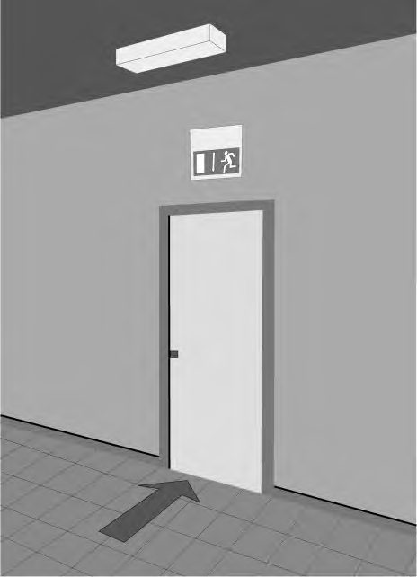
Аварийное освещение подключается к источнику питания, независимому от источника питания рабочего освещения.
В случае применения для рабочего и аварийного освещения светильников с однотипным корпусом светильники аварийного освещения должны быть маркированы буквой «А» красного цвета согласно СП 52.13330.2016 (пункт 7.6.8).
5Эвакуационное аварийное освещение
5.1Общие положения
- а) Перед каждой дверью выхода, который предназначен для использования в случае опасности в качестве эвакуационного выхода на расстоянии не далее 2 м от двери в горизонтальной плоскости. При этом необходимо обеспечить горизонтальную освещенность 5 лк на полу у эвакуационного выхода. Светильник может располагаться над выходом, как на потолке, так и на стене помещения (рисунок 5.1).
- б) На лестницах - с таким расположением светильников, чтобы каждая ступенька лестничного пролета была освещена прямым светом (то есть расчетная точка на ступени лестницы может быть соединена с точкой на выходном отверстии светильника прямой линией), в соответствии с рисунком 5.2.
Рисунок 5.1 - Расположение светильника эвакуационного освещения над каждым аварийным выходом
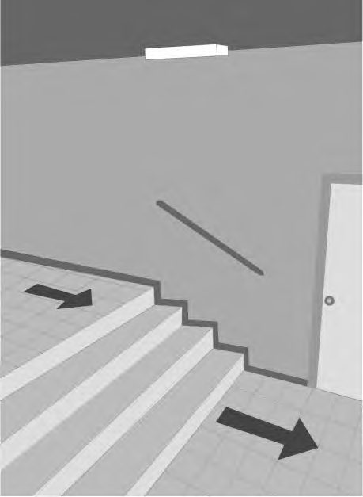
Рисунок 5.2 - Расположение светильника эвакуационного освещения на лестничном пролете
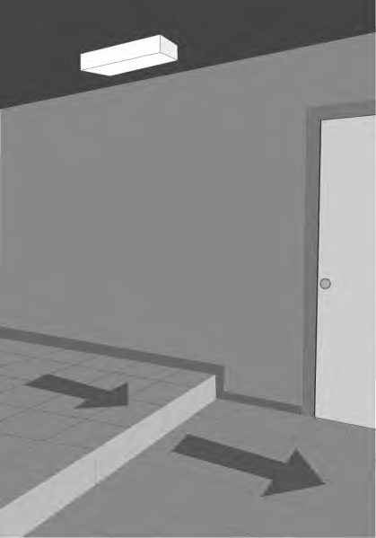
- в) В местах изменения уровня пола - на расстоянии не более 2 м в горизонтальной плоскости от места изменения уровня пола в соответствии с рисунком 5.3.
Рисунок 5.3 - Расположение светильника эвакуационного освещения в месте изменения уровня пола
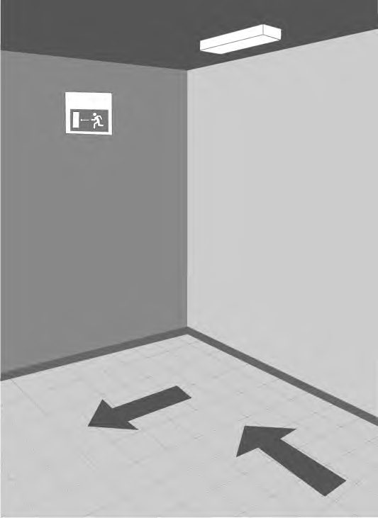
- г) В местах каждого изменения направления пути эвакуации - на расстоянии не более 2 м в горизонтальной плоскости от места изменения направления, в соответствии с рисунком 5.4.
- д) В местах пересечения коридоров - на расстоянии не более 2 м от центра пересечения в горизонтальной плоскости, в соответствии с рисунком 5.5.
- е) В местах размещения знаков безопасности с внешней подсветкой, в соответствии с рисунком 5.6.
- ж) В местах расположения средств медицинской помощи (медицинской аптечки) - на расстоянии не более 2 м от места расположения медицинской аптечки в горизонтальной плоскости. При этом необходимо обеспечить вертикальную освещенность 5 лк в центре места расположения медицинской аптечки, располагая светильник в соответствии с рисунком 5.7.
Рисунок 5.4 - Расположение светильника эвакуационного освещения на месте изменения направления (повороте) пути эвакуации
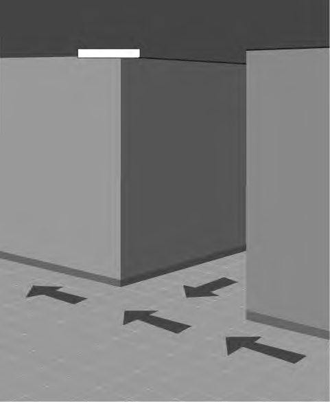
Рисунок 5.5 - Расположение светильника эвакуационного освещения на пересечении коридоров
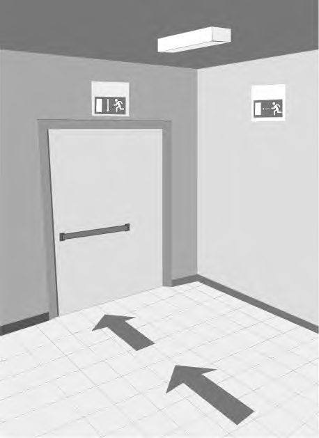
Рисунок 5.6 - Расположение светильника эвакуационного освещения в местах расположения знаков безопасности
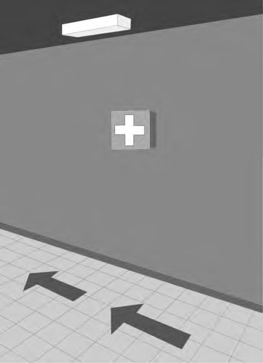
Рисунок 5.7 - Расположение светильника эвакуационного освещения в местах расположения медицинской аптечки
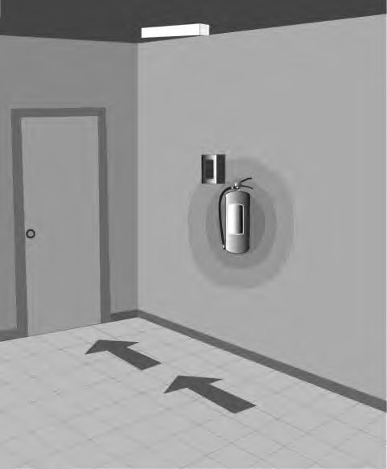
- и) В местах размещения первичных средств пожаротушения и противопожарного оборудования и кнопки экстренней связи - на расстоянии не более 2 м от места расположения средств в горизонтальной плоскости. При этом необходимо обеспечить вертикальную освещенность 5 лк в центре места их расположения, размещая светильник в соответствии с рисунком 5.8.
Рисунок 5.8 - Расположение светильника эвакуационного освещения возле пожарной кнопки и огнетушителя
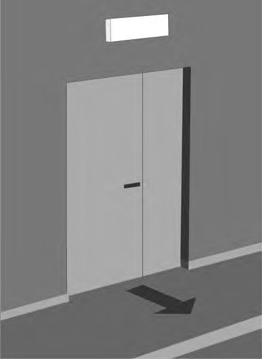
- к) В местах расположения оборудования для эвакуации инвалидов - на расстоянии не более 2 м от места расположения оборудования в горизонтальной плоскости. Туалет для инвалидов должен быть оборудован кнопкой экстренной связи.
- л) Перед каждым конечным выходом на улицу внутри и снаружи здания - на расстоянии не более 2 м от выхода в горизонтальной плоскости, располагая светильник в соответствии с рисунком 5.9.
Рисунок 5.9 - Расположение светильника эвакуационного освещения снаружи здания
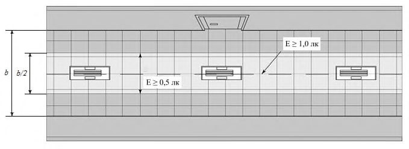
Для мест, указанных в перечислениях б), в), и), к) 5.1.3, если через них не проходят маршруты эвакуации и они не относятся к площадкам на открытых пространствах, должна быть обеспечена освещенность не менее 5 лк на уровне пола.
5.2Освещение путей эвакуации
Рисунок 5.10 - Освещение маршрутов эвакуации
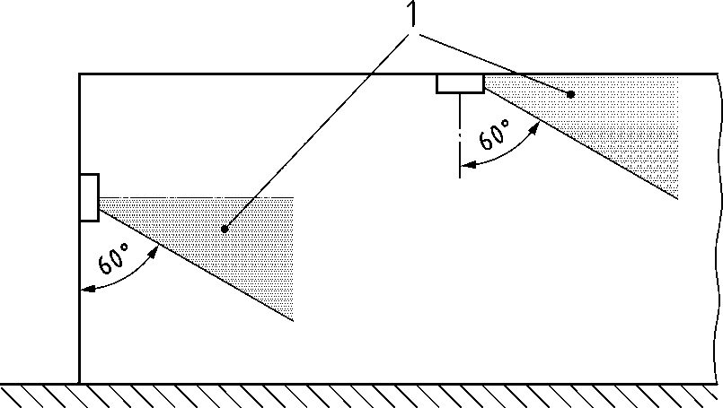
Маршруты эвакуации с большей шириной могут быть либо приняты как некоторое число 2-метровых полос, либо обеспечиваться освещением, как для антипанического освещения.
Для горизонтальных маршрутов эвакуации сила света соответствующих светильников не должна превышать значений, указанных в таблице 5.1, в пределах зоны от 60° до 90° относительно вертикали, направленной к полу, на всех углах азимута согласно рисунку 5.11.
Для всех других маршрутов эвакуации и пространств граничные значения не должны быть превышены при любом угле согласно рисунку 5.12.

1 - зоны, где максимальная сила света не должна превышать значений таблицы 5.1
Рисунок 5.11 - Ограничение слепящего действия на путях эвакуации, расположенных на одном уровне
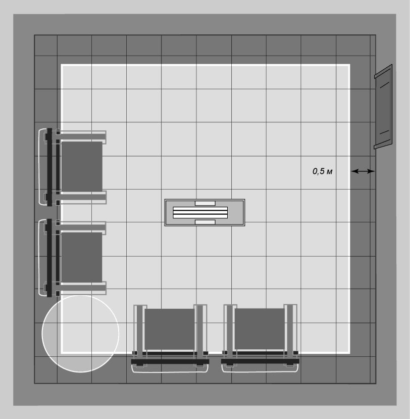
1 - зона, где максимальная сила света не должна превышать значений
таблицы 5.1
Рисунок 5.12 - Ограничение слепящего действия на путях эвакуации, расположенных на разных уровнях
Примечание -Высокий контраст между яркостью эвакуационного светильника и окружающего его фона может вызывать слепимость. В освещении маршрутов эвакуации главной проблемой становится ослепление, при котором яркость эвакуационных светильников может слепить и мешать нормально видеть препятствия и знаки.
Таблица 5.1 Ограничение слепящего действия светильников аварийного освещения по силе света
| Высота установки светильников аварийного освещения h , м | Сила света светильников аварийного освещения, кд, не более | Сила света светильников аварийного освещения, кд, не более |
|---|---|---|
| Высота установки светильников аварийного освещения h , м | Освещение путей эвакуации и антипаническое освещение | Освещение зон повышенной опасности |
| h < 2,5 | 500 | 1000 |
| 2,5 < h < 3,0 | 900 | 1800 |
| 3,0 < h < 3,5 | 1600 | 3200 |
| 3,5 < h < 4,0 | 2500 | 5000 |
| 4,0 < h < 4,5 | 3500 | 7000 |
| h > 4,5 | 5000 | 10000 |
Примечания
- 1 В настоящей таблице приведены значения, которые следует сравнивать с паспортными данными эвакуационных светильников.
- 2 Приведенные в настоящей таблице максимальные значения силы света соответствуют ГОСТ Р 55842.
5.3Антипаническое аварийное освещение
Рисунок 5.13 - Зона помещения (в плане), которая освещается антипаническим аварийным освещением
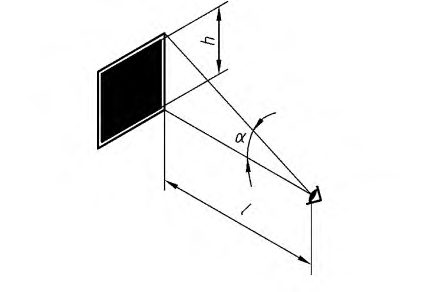
5.4Аварийное освещение зон повышенной опасности
6Резервное аварийное освещение
Необходимость принятия для резервного освещения более высоких норм освещенности определяется в зависимости от условий функционирования данного объекта.
Эвакуационное освещение предусматривается независимым от резервного освещения.
7Знаки безопасности
- с внутренней подсветкой - светильник с нанесенной на прозрачное световое отверстие знаком безопасности и источником света внутри;
- с внешней подсветкой -знак безопасности, требующий дополнительного освещения светильником аварийного освещения.
Эвакуационные знаки безопасности устанавливаются: а) над каждым эвакуационным выходом;
- б) на путях эвакуации, однозначно указывая направления эвакуации; в) для обозначения поста медицинской помощи; г) для обозначения мест размещения первичных средств пожаротушения; д) для обозначения мест размещения средств экстренной связи и других средств, предназначенных для оповещения о чрезвычайной ситуации.
2 - в отсутствие вероятности задымления;
10 - при наличии вероятности задымления.
При измерениях яркости знака безопасности яркость измеряют по нормали к поверхности на участке диаметром 10 мм для каждой цветной области знака.
Расстояние распознавания, с которого знак безопасности ясно виден и различаем по форме и цвету, связано с высотой знака безопасности, приведенного на рисунке 7.1, формулой где h - высота знака; l расстояние распознавания;
Z - коэффициент, равный 100 для знаков, освещенных извне, и 200 - для знаков, освещенных изнутри.
Рисунок 7.1 - Расчет высоты знака безопасности
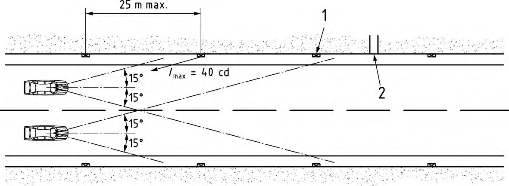
8Влияние дыма на аварийное освещение
При проектировании аварийного освещения в помещениях, где возможно задымление, необходимо:
- а) применять только знаки безопасности с внутренней подсветкой;
- б) размещать знаки безопасности на путях эвакуации на высотах 0,5 и 2,0 м от пола в пределах прямой видимости из любой точки на путях эвакуации;
- в) обеспечивать яркость знаков безопасности не менее 10 кд/м² .
9Применение систем аварийного освещения в помещениях зданий и сооружений
В настоящем разделе рассмотрены требования к аварийному освещению отдельных видов зданий и сооружений, различных по своему функциональному назначению.
9.1Аварийное освещение зрелищных учреждений
Таблица 9.1 Аварийное освещение зданий и сооружений
| Назначение помещения | Вид аварийного освещения | Минимальная освещенность, лк | Макси- мальное время включения | Расчетная длительность работы источника аварийного электро- снабжения, ч | Постоянно включенные эвакуационные указатели и указатели безопасности |
|---|---|---|---|---|---|
| 1 Зрелищные учреждения | 1 Зрелищные учреждения | 1 Зрелищные учреждения | 1 Зрелищные учреждения | 1 Зрелищные учреждения | 1 Зрелищные учреждения |
| 1.1 Зрительные залы площадью более 60 м² | Антипаническое освещение | 0,5 | 15 | 1,0 | + |
| 1.1 Зрительные залы площадью более 60 м² | Освещение путей эвакуации | 1,0 | 15 | 1,0 | + |
| 1.2 Зрительные залы площадью менее 60 м² | Освещение путей эвакуации | 1,0 | 15 | 1,0 | + |
| 1.3 Сцены (эстрады, манежи) площадью менее 60 м² при отсутствии факторов повышенной опасности | Освещение путей эвакуации | 1,0 | 15 | 1,0 | + |
| 1.4 Сцены (эстрады, манежи) площадью менее 60 м² при наличии факторов повышенной опасности (движущиеся транспортные сред- ства и подъемные механизмы, открытый огонь (фейерверк), ванны с водой, дикие животные и т. п.) | Освещение зон повышенной опасности | 15 | 0,5 | 1,0 | + |
| 1.5 Сцены (эстрады, манежи) площадью более 60 м² при отсутствии факторов повышенной опасности | Антипаническое освещение | 0,5 | 15 | 1,0 | + |
| 1.5 Сцены (эстрады, манежи) площадью более 60 м² при отсутствии факторов повышенной опасности | Освещение путей эвакуации | 1,0 | 15 | 1,0 | + |
Продолжение таблицы 9.1
| 1.6 Сцены (эстрады, манежи) площадью более 60 м² при наличии факторов повышенной опасности (движущиеся транспортные сред- ства и подъемные механизмы, открытый огонь (фейерверк), ванны с водой, дикие животные и т. п.) | Антипаническое освещение | 0,5 | 15 | 1,0 | + |
|---|---|---|---|---|---|
| 1.6 Сцены (эстрады, манежи) площадью более 60 м² при наличии факторов повышенной опасности (движущиеся транспортные сред- ства и подъемные механизмы, открытый огонь (фейерверк), ванны с водой, дикие животные и т. п.) | Освещение зон повышенной опасности | 15 | 0,5 | 1,0 | + |
| 1.7 Пути эвакуации: используемые при эвакуации коридоры и лестницы, холлы, помещения между лестницами, выходы на улицу | Освещение путей эвакуации | 1,0 | 15 | 1,0 | + |
| 1.8 Центральный диспетчерский пункт, узел связи, технические, аппаратные, электропомещения (помещения ГРЩ, ВРУ и все иные помещения с доступом для квалифицированного персонала, в которых размещаются либо источники аварийного элек- троснабжения, либо электрообору- дование, питаемое от системы аварийного электроснабжения), регуляторные, киноаппаратные, диспетчерские, помещения управ- ления сценическим освещением, звуком, механизмами сцены | Освещение зон повышенной опасности | 10 %нормы освещенности при рабочем освещении, но не менее 15 | 0,5 | 1,0 | - |
| 1.9 Кабины пассажирских лифтов | Освещение путей эвакуации | 1,0 | 15 | 1,0 | + |
Продолжение таблицы 9.1
| 2 Предприятия общественного питания | 2 Предприятия общественного питания | 2 Предприятия общественного питания | 2 Предприятия общественного питания | 2 Предприятия общественного питания | 2 Предприятия общественного питания |
|---|---|---|---|---|---|
| 2.1 Обеденные и банкетные залы площадью более 60 м² , с возможностью нахождения в них | Антипаническое освещение | 0,5 | 15 | 1,0 | + |
| более 30 человек | Освещение путей эвакуации | 1,0 | 15 | 1,0 | + |
| 2.2 Обеденные и банкетные залы площадью менее 60 м² | Освещение путей эвакуации | 1,0 | 15 | 1,0 | + |
| 2.3 Пути эвакуации: используемые при эвакуации коридоры и лестницы, холлы, помещения между лестницами, выходы на улицу | Освещение путей эвакуации | 1,0 | 15 | 1,0 | + |
| 2.4 Места перед каждым эваку- ационным выходом и эвакуационным выходом снаружи здания, места расположения средств медицинской помощи (медицин- ской аптечки), расположения противопожарного оборудования, размещения плана эвакуации, аварийной сигнализации | Освещение путей эвакуации | 5,0 | 15 | 1,0 | + |
| 2.5 Технологические помещения с факторами опасности (электро- и газовые плиты, жаровни, печи, электромеханическое оборудование для обработки пищи и отходов и т. п.) | Освещение зон повышенной опасности | 10 %нормы освещенности при рабочем освещении, но не менее 15 | 0,5 | 0,5 | - |
| 2.6 Кабины пассажирских и грузовых лифтов | Освещение путей эвакуации | 1,0 | 15 | 1,0 | + |
Продолжение таблицы 9.1
| 3 Торговые помещения | 3 Торговые помещения | 3 Торговые помещения | 3 Торговые помещения | 3 Торговые помещения | 3 Торговые помещения |
|---|---|---|---|---|---|
| 3.1 Торговые залы площадью более 60 м² | Антипаническое освещение | 0,5 | 15 | 1,0 | + |
| 3.1 Торговые залы площадью более 60 м² | Освещение путей эвакуации | 1,0 | 15 | 1,0 | + |
| 3.2 Торговые залы площадью менее 60 м² | Освещение путей эвакуации | 1,0 | 15 | 1,0 | + |
| 3.3 Пути эвакуации: используемые при эвакуации коридоры и лестницы, холлы, помещения между лестницами, выходы на улицу | Освещение путей эвакуации | 1,0 | 15 | 1,0 | + |
| 3.4 Места перед каждым эваку- ационным выходом и эвакуационным выходом снаружи здания, места расположения средств медицинской помощи (медицин- ской аптечки), расположения противопожарного оборудования, размещения плана эвакуации, аварийной сигнализации | Освещение путей эвакуации | 5,0 | 15 | 1,0 | + |
| 3.5 Входы и сходы на эскалаторы и траволаторы, предлифтовые пло- щадки | Освещение зон повышенной опасности | 15 | 0,5 | 1,0 | - |
| 3.6 Помещения для обеспечения безопасности: посты охраны, посты полиции, пожарные посты и пункты неотложной и медицинской помощи и пр. | Освещение путей эвакуации | 5,0 | 15 | 1,0 | + |
| 3.7 Диспетчерские и электропо- мещения (помещения ГРЩ, ВРУ и все иные помещения с доступом для | Освещение зон повышенной опасности | 10 %нормы освещенности при рабочем | 0,5 | 1,0 | - |
.
Продолжение таблицы 9.1
| квалифицированного персонала, в которых размещаются либо источники и распределительные щиты аварийного электроснаб- жения, либо электрооборудование, питаемое от системы аварийного электроснабжения), в зонах применения подъемно-транспорт- ного или иного опасного оборудо- вания, дебаркадерах и зонах разгрузки | освещении, но не менее 15 | ||||
|---|---|---|---|---|---|
| 3.8 Кабины пассажирских лифтов | Освещение путей эвакуации | 1,0 | 15 | 1,0 | + |
| 4 Спортивные сооружения | 4 Спортивные сооружения | 4 Спортивные сооружения | 4 Спортивные сооружения | 4 Спортивные сооружения | 4 Спортивные сооружения |
| 4.1 Пути эвакуации: используемые при эвакуации коридоры и лестницы, наружные лестницы трибун, холлы, помещения между лестницами, пешеходные эстакады, выходы на улицу | Освещение путей эвакуации | 1,0 | 15 | 1,0 | + |
| 4.2 Спортивные арены, | Антипаническое освещение | 0,5 | 15 | 1,0 | + |
| физкультурно-спортивные залы, крытые трибуны для зрителей, закрытые фойе площадью более 60 м² | Освещение путей эвакуации | 1,0 | 15 | 1,0 | + |
| 4.3 Физкультурно-спортивные залы, закрытые фойе площадью менее 60 м² | Освещение путей эвакуации | 1,0 | 15 | 1,0 | + |
Продолжение таблицы 9.1
| 5 Бассейны для плавания | 5 Бассейны для плавания | 5 Бассейны для плавания | 5 Бассейны для плавания | 5 Бассейны для плавания | 5 Бассейны для плавания |
|---|---|---|---|---|---|
| 5.1 Крытые трибуны для зрителей | Антипаническое освещение | 0,5 | 15 | 1,0 | + |
| 5.2 Водная поверхность ванн и проходы вдоль периметра ванн площадью зеркала до 100 м² при отсутствии факторов опасности | Освещение путей эвакуации | 5,0* | 15 | 1,0 | + |
| 5.3 Водная поверхность ванн и проходы вдоль периметра ванн площадью зеркала более 100 м² при отсутствии факторов опасности | Освещение зон повышенной опасности | 15 | 0,5 | 1,0 | + |
| 5.4 Водная поверхность ванн бассейнов и проходы вдоль периметра при наличии факторов опасности (прыжки в воду с высоты; подводное плавание и тренировки с аквалангом; водные аттракционы; плавание на лодках и т. п.) | Освещение зон повышенной опасности | 10 %нормы освещенности при рабочем освещении, но не менее 15 | 0,5 | 1,0 | + |
| 5.5 Места перед каждым эваку- ационным выходом и эвакуационным выходом снаружи здания, места расположения средств медицинской помощи (медицин- ской аптечки), расположения противопожарного оборудования, размещения плана эвакуации, аварийной сигнализации | Освещение путей эвакуации | 5,0 | 15 | 1,0 | + |
| 5.6 Помещения для обеспечения безопасности (посты охраны и входного контроля, пожарные посты | Освещение путей эвакуации | 5,0 | 15 | 1,0 | + |
.
Продолжение таблицы 9.1
| и пункты неотложной и медицинской помощи) | |||||
|---|---|---|---|---|---|
| 5.7 Диспетчерские, электро- помещения (помещения ГРЩ, ВРУ и все иные помещения с доступом для квалифицированного персонала, в которых размещаются либо источники аварийного электро- снабжения, либо электрооборудо- вание, питаемое от системы аварийного электроснабжения), помещения для дезинфекции воды и баллонов с газами | Освещение зон повышенной опасности | 10 %нормы освещенности при рабочем освещении, но не менее 15 | 0,5 | 1,0 | + |
| 6 Помещения гостиниц | 6 Помещения гостиниц | 6 Помещения гостиниц | 6 Помещения гостиниц | 6 Помещения гостиниц | 6 Помещения гостиниц |
| 6.1 Пути эвакуации: используемые при эвакуации коридоры и лестницы, холлы, помещения между лестницами, выходы на улицу | Освещение путей эвакуации | 1,0 | 15 | 1,0 | + |
| 6.2 Помещения для обеспечения безопасности (посты охраны и входного контроля, пожарные посты и пункты неотложной и медицинской помощи) | Освещение путей эвакуации | 5,0 | 15 | 1,0 | + |
| 6.3 Диспетчерские, электропо- мещения (помещения ГРЩ, ВРУ и все иные помещения с доступом для квалифицированного персонала, в которых размещаются либо источники аварийного электро- снабжения, либо электро- | Освещение зон повышенной опасности | 10 %нормы освещенности при рабочем освещении, но не менее 15 | 0,5 | 1,0 | - |
Продолжение таблицы 9.1
| оборудование, питаемое от системы аварийного электроснабжения), помещения для дезинфекции воды и баллонов с газами | |||||
|---|---|---|---|---|---|
| 6.4 Кабины пассажирских лифтов | Освещение путей эвакуации | 5,0 | 15 | 1,0 | + |
| 7 Жилые помещения | 7 Жилые помещения | 7 Жилые помещения | 7 Жилые помещения | 7 Жилые помещения | 7 Жилые помещения |
| 7.1 Пути эвакуации: используемые при эвакуации коридоры и лест- ницы, холлы, помещения между лестницами, выходы на улицу | Освещение путей эвакуации | 1,0 | 15 | 1,0 | +** |
| 7.2 Кабины пассажирских лифтов | Освещение путей эвакуации | 1,0 | 15 | 1,0 | + |
| 8 Помещения высотных зданий | 8 Помещения высотных зданий | 8 Помещения высотных зданий | 8 Помещения высотных зданий | 8 Помещения высотных зданий | 8 Помещения высотных зданий |
| 8.1 Пути эвакуации: используемые при эвакуации коридоры и лестни- цы, холлы, помещения между лестницами, выходы на улицу | Освещение путей эвакуации | 1,0 | 15 | 1,0 | + |
| 8.2 Кабины пассажирских лифтов и лифтов пожарных расчетов, освеще- ние площадок для вертолетов и аварийно-спасательных кабин | Освещение путей эвакуации | 5,0 | 15 | 1,0 | + |
| 8.3 Помещения для обеспечения безопасности (посты охраны и входного контроля, пожарные посты и пункты неотложной и медицинской помощи) | Освещение путей эвакуации | 5,0 | 15 | 1,0 | + |
| 8.4 Диспетчерские, электропо- мещения (помещения ГРЩ, ВРУ и все иные помещения с доступом для | Освещение зон повышенной опасности | 10 %нормы освещенности при рабочем | 0,5 | 1,0 | + |
Продолжение таблицы 9.1
| квалифицированного персонала, в которых размещаются либо источники аварийного элек- троснабжения, либо электро- оборудование, питаемое от системы аварийного электроснабжения) | освещении, но не менее 15 | ||||
|---|---|---|---|---|---|
| 9 Здания и помещения медицинских организаций | 9 Здания и помещения медицинских организаций | 9 Здания и помещения медицинских организаций | 9 Здания и помещения медицинских организаций | 9 Здания и помещения медицинских организаций | 9 Здания и помещения медицинских организаций |
| 9.1 Пути эвакуации: используемые при эвакуации коридоры, основные проходы и лестницы, холлы, помещения между лестницами, выходы на улицу | Освещение путей эвакуации | 5,0 | 15 | 1,0 | + |
| 9.2 Операционные блоки, реанимаци- онные, родовые отделения, пере- вязочные, манипуляционные проце- дурные, приемные отделения, лаборатории срочных анализов, посты дежурных медицинских сестер | Резервное освещение | 30 % нормы освещенности при рабочем освещении | 60 | 1,0 | + |
| 9.3 Помещения оперативной части, хранения ящиков выездных бригад, аптечные комнаты станций (отделений) скорой (неотложной) медицинской помощи, помещения диспетчерских, операторских, узлов связи, электрощитовых, дежурных, пожарных постов, постов постоянной охраны; гардеробы, вестибюли, тепловые пункты, насосные и т. п.) | Резервное освещение | 30 % нормы освещенности при рабочем освещении | 60 | 1,0 | + |
Продолжение таблицы 9.1
| 9.4 Помещения для обеспечения безопасности (посты охраны и входного контроля, пожарные посты и пункты неотложной и медицинской помощи) | Освещение путей эвакуации | 5,0 | 15 | 1,0 | + |
|---|---|---|---|---|---|
| 9.5 Диспетчерские, электропоме- щения (помещения ГРЩ, ВРУ и все иные помещения с доступом для квалифицированного персонала, в которых размещаются либо источники аварийного электро- снабжения, либо электрооборудо- вание, питаемое от системы аварий- ного электроснабжения) | Освещение зон повышенной опасности | 10 %нормы освещенности при рабочем освещении, но не менее 15 | 0,5 | 1,0 | - |
| 9.6 Кабины лифтов для персонала, перевозки больных и лифтов пожарных расчетов | Освещение путей эвакуации | 1,0 | 15 | 1,0 | - |
| 10 Общеобразовательные организации и дошкольные образовательные организации | 10 Общеобразовательные организации и дошкольные образовательные организации | 10 Общеобразовательные организации и дошкольные образовательные организации | 10 Общеобразовательные организации и дошкольные образовательные организации | 10 Общеобразовательные организации и дошкольные образовательные организации | 10 Общеобразовательные организации и дошкольные образовательные организации |
| 10.1 Пути эвакуации: используемые при эвакуации коридоры и лестницы, холлы, помещения между лестницами, выходы на улицу | Освещение путей эвакуации | 5,0 | 15 | 1,0 | + |
| 10.2 Помещения для обеспечения безопасности (посты охраны и входного контроля, пожарные посты и пост медицинской сестры) | Освещение путей эвакуации | 5,0 | 15 | 1,0 | + |
| 10.3 Игровые, групповые, музыкальные и актовые залы | Освещение путей эвакуации | 1,0 | 15 | 1,0 | + |
| 10.4 Столовые и спальные комнаты | Освещение путей эвакуации | 1,0 | 15 | 1,0 | + |
Продолжение таблицы 9.1
| 10.5 Иные помещения без окон, предназначенные для пребывания детей | Освещение путей эвакуации | 5,0 | 15 | 1,0 | + |
|---|---|---|---|---|---|
| 10.6 Водная поверхность бассейна и проходы вдоль периметра ванн с площадью зеркала более 100 м | Освещение зон повышенной опасности | 15 | 0,5 | 1,0 | + |
| 10.7 Помещения для приготовления пищи | Освещение зон повышенной опасности | 10 %нормы освещенности при рабочем освещении, но не менее 15 | 0,5 | 0,5 | + |
| 10.8 Электропомещения (помеще- ния ГРЩ, ВРУ и все иные помещения с доступом для квалифицированного персонала, в которых размещаются либо источники аварийного электро- снабжения, либо электрооборудо- вание, питаемое от системы аварий- ного электроснабжения) | Освещение путей эвакуации | 5,0 | 15 | 1,0 | + |
| 11 Помещения стоянок автомобилей | 11 Помещения стоянок автомобилей | 11 Помещения стоянок автомобилей | 11 Помещения стоянок автомобилей | 11 Помещения стоянок автомобилей | 11 Помещения стоянок автомобилей |
| 11.1 Пути эвакуации: проезды для автомобилей, пешеходные проходы и дорожки вдоль проездов и рядом с ними, лифтовые площадки, лестницы и пути, ведущие к аварийным выходам основные и запасные выходы на улицу | Освещение путей эвакуации | 1,0 | 15 | 1,0 | + |
| 11.2 Помещения для обеспечения безопасности (посты охраны и | Освещение путей эвакуации | 5,0 | 15 | 1,0 | + |
Продолжение таблицы 9.1
| входного контроля, пожарные посты) | |||||
|---|---|---|---|---|---|
| 11.3 Электропомещения (помеще- ния ГРЩ, ВРУ и все иные помещения с доступом для квалифицированного персонала, в которых размещаются либо источники аварийного электро- снабжения, либо электрообо- рудование, питаемое от системы аварийного электроснабжения) | Освещение зон повышенной опасности | 10 %нормы освещенности при рабочем освещении, но не менее 15 | 0,5 | 1,0 | - |
| 11.4 Кабины пассажирских лифтов и лифтов для пожарных расчетов | Освещение путей эвакуации | 1,0 | 15 | 1,0 | - |
| 12 Производственные здания, помещения и зоны | 12 Производственные здания, помещения и зоны | 12 Производственные здания, помещения и зоны | 12 Производственные здания, помещения и зоны | 12 Производственные здания, помещения и зоны | 12 Производственные здания, помещения и зоны |
| 12.1 Пути эвакуации: используемые при эвакуации коридоры и лестницы, холлы, помещения между лестницами, выходы на улицу | Освещение путей эвакуации | 5,0 | 15 | 1,0 | + |
| 12.2 Производственные помещения площадью менее 60 м² при одновременном нахождении в помещении менее 30 человек при отсутствии факторов повышенной опасности | Освещение путей эвакуации | 1,0 | 15 | 1,0 | + |
| 12.3 Производственные помещения площадью более 60 м² при одновременном нахождении в помещении менее 30 человек при наличии факторов повышенной опасности | Освещение зон повышенной опасности | 15 | 0,5 | 1,0 | + |
Продолжение таблицы 9.1
| 12.4 Производственные помещения площадью более 60 м² при одновременном нахождении в помещении более 30 человек при отсутствии факторов повышенной опасности | Антипаническое освещение | 0,5 | 15 | 1,0 | + |
|---|---|---|---|---|---|
| 12.4 Производственные помещения площадью более 60 м² при одновременном нахождении в помещении более 30 человек при отсутствии факторов повышенной опасности | Освещение путей эвакуации | 1,0 | 15 | 1,0 | + |
| 12.5 Производственные помещения площадью более 60 м² при одновременном нахождении в помещении более 30 человек при наличии факторов повышенной опасности | Антипаническое освещение | 0,5 | 15 | 1,0 | + |
| 12.5 Производственные помещения площадью более 60 м² при одновременном нахождении в помещении более 30 человек при наличии факторов повышенной опасности | Освещение зон повышенной опасности | 10 %нормы освещенности при рабочем освещении, но не менее 15 | 0,5 | 1,0 | + |
| 12.6 Кабины пассажирских и грузовых лифтов и лифтов для пожарных расчетов | Освещение путей эвакуации | 1,0 | 15 | 1,0 | - |
| 12.7 Помещения для обеспечения безопасности (посты охраны и входного контроля, пожарные посты и пункты неотложной и медицинской помощи) | Освещение путей эвакуации | 5,0 | 15 | 1,0 | + |
| 12.8 Диспетчерские, электропо- мещения (помещения ГРЩ, ВРУ и все иные помещения с доступом для квалифицированного персонала, в которых размещаются либо источники аварийного электро- снабжения, либо электрообору- дование, питаемое от системы аварийного электроснабжения) | Освещение зон повышенной опасности | 10 %нормы освещенности при рабочем освещении, но не менее 15 | 0,5 | 1,0 | - |
Продолжение таблицы 9.1
| 13 Помещения и зоны транспортного сооружения | 13 Помещения и зоны транспортного сооружения | 13 Помещения и зоны транспортного сооружения | 13 Помещения и зоны транспортного сооружения | 13 Помещения и зоны транспортного сооружения | 13 Помещения и зоны транспортного сооружения |
|---|---|---|---|---|---|
| 13.1 Крытые залы ожидания площадью менее 60 м² и вероятным количеством одновременного нахождения в помещении пасса- жиров менее 30 человек | Освещение путей эвакуации | 1,0 | 15 | 1,0 | + |
| 13.2 Крытые залы ожидания площадью 60 м² и вероятным количеством одновременного нахож- дения в помещении пассажиров более 30 человек | Антипаническое освещение | 0,5 | 15 | 1,0 | + |
| 13.2 Крытые залы ожидания площадью 60 м² и вероятным количеством одновременного нахож- дения в помещении пассажиров более 30 человек | Освещение путей эвакуации | 1,0 | 15 | 1,0 | + |
| 13.3 Крытые подземные транспортные платформы для пассажиров | Освещение путей эвакуации | 1,0 | 15 | 1,0 | + |
| 13.4 Основные и запасные пути эвакуации, включая галереи для прохода, тамбуры и шлюзовые, любые лестницы и пандусы, ступени эскалаторов и полотно траволаторов, выходы на улицу (наружные платформы) | Освещение путей эвакуации | 1,0 | 15 | 1,0 | + |
| 13.5 Входы и сходы на эскалаторы и траволаторы, предлифтовые пло- щадки | Освещение зон повышенной опасности | 15 | 0,5 | 1,0 | - |
| 13.6 Подземные переходы для пассажиров и пешеходов | Освещение путей эвакуации | 1,0 | 15 | 1,0 | + |
| 13.7 Места размещения вызывных устройств и телефонов экстренных служб, тревожных кнопок и кнопок пожарной сигнализации, огнетуши- тели и иные средства спасения для | Освещение путей эвакуации | 5,0 | 15 | 1,0 | + |
.
Продолжение таблицы 9.1
| использования пассажирами (пеше- ходами) | |||||
|---|---|---|---|---|---|
| 13.8 Кабины пассажирских и грузовых лифтов и лифтов для пожарных расчетов | Освещение путей эвакуации | 1,0 | 15 | 1,0 | - |
| 13.9 Помещения для обеспечения безопасности (посты охраны и входного контроля, пожарные посты и пункты неотложной и медицинской помощи) | Освещение путей эвакуации | 5,0 | 15 | 1,0 | + |
| 13.10 Диспетчерские, электропо- мещения (помещения ГРЩ, ВРУ и все иные помещения с доступом для квалифицированного персонала, в которых размещаются либо источники аварийного электро- снабжения, либо электрооборудова- ние, питаемое от системы аварий- ного электроснабжения) | Освещение зон повышенной опасности | 10 %нормы освещенности при рабочем освещении, но не менее 15 | 0,5 | 1,0 | - |
| 14 Выставочные учреждения | 14 Выставочные учреждения | 14 Выставочные учреждения | 14 Выставочные учреждения | 14 Выставочные учреждения | 14 Выставочные учреждения |
| 14.1 Выставочные залы, залы музеев и галерей площадью менее 60 м² и вероятной численностью одновре- менно находящихся в нем посетителей менее 30 человек | Освещение путей эвакуации | 1,0 | 15 | 1,0 | + |
| 14.2 Выставочные залы, залы музеев и галерей площадью 60 м² и вероятной численностью одновре- менно находящихся в нем посети- телей более 30 человек | Антипаническое освещение | 0,5 | 15 | 1,0 | + |
| 14.2 Выставочные залы, залы музеев и галерей площадью 60 м² и вероятной численностью одновре- менно находящихся в нем посети- телей более 30 человек | Освещение путей эвакуации | 1,0 | 15 | 1,0 | + |
Продолжение таблицы 9.1
| 14.3 Пути эвакуации: используемые при эвакуации коридоры и лестни- цы, холлы, помещения между лестницами, выходы на улицу | Освещение путей эвакуации | 5,0 | 15 | 1,0 | + |
|---|---|---|---|---|---|
| 14.4 Помещения для обеспечения безопасности ( посты охраны и входного контроля, посты полиции, пожарные посты и пункты неотло- | Освещение путей эвакуации | 5,0 | 15 | 1,0 | + |
| жной и медицинской помощи) 14.5 Технические, аппаратные, включая электропомещения (поме- щения ГРЩ, ВРУ и все иные помещения с доступом для квалифицированного персонала, в которых размещаются либо источники аварийного электро- снабжения, либо электрообо- рудование, питаемое от системы аварийного электроснабжения), регуляторные, киноаппаратные, диспетчерские, помещения управ- ления освещением, звуком, механиз- мами сцены | Освещение зон повышенной опасности | 10 %нормы освещенности при рабочем освещении, но не менее 15 | 0,5 | 1,0 | - |
| 14.6 Кабины пассажирских и грузовых лифтов | Освещение путей эвакуации | 1,0 | 15 | 1,0 | - |
Продолжение таблицы 9.1
Примечание - В настоящей таблице применены следующие условные обозначения в последней графе:
- «+» - означает обязательность установки световых эвакуационных указателей;
- «-» - означает, что световые указатели в данном случае необязательны и устанавливаются, при необходимости, по усмотрению проектной организации либо собственника здания.
9.2Аварийное освещение на предприятиях общественного питания
9.3Аварийное освещение торговых помещений
9.4Аварийное освещение спортивных сооружений
9.5Аварийное освещение бассейнов для плавания
9.6Аварийное освещение гостиниц
9.7Аварийное освещение жилых домов
СП 439.1325800.2018
9.8Аварийное освещение высотных зданий
9.9Аварийное освещение зданий и помещений медицинских организаций
Освещенность в 1 лк на полу кабины должна обеспечиваться в течение 1 ч в случае прекращения питания рабочего освещения. При отказе питания рабочего освещения аварийное освещение кабины должно включаться автоматически.
9.10Аварийное освещение общеобразовательных организаций и дошкольных образовательных организаций
9.11Аварийное освещение стоянок автомобилей
9.12Аварийное освещение производственных зданий, помещений и зон
9.13Аварийное освещение автотранспортных тоннелей
Освещение зон повышенной опасности обеспечивают частью светильников рабочего освещения, в которых все или часть ламп подключают к источнику, независимому от источника питания основного рабочего освещения.
Нормируемая освещенность должна быть обеспечена не более чем через 0,5 с после отключения рабочего освещения.
Для транспортных перемычек между стволами тоннеля применяют нормы освещения, аналогичные нормам для проезжей части в аварийном режиме.
Динамические световые указатели должны показывать направление к ближайшему эвакуационному выходу, расположенному вне зоны пожара или задымления в тоннеле. Такие указатели следует устанавливать при длине тоннеля свыше 1000 м.
1 - указатели; 2 - эвакуационный выход
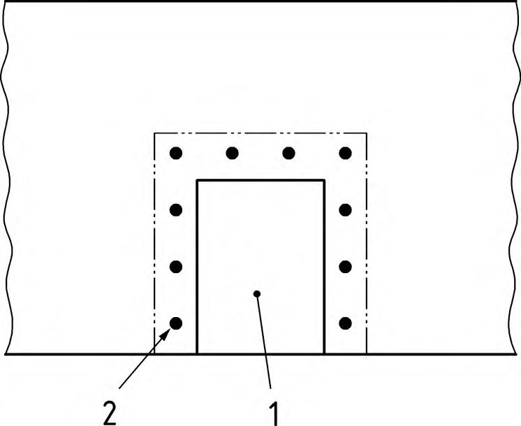
Рисунок 9.1 - Области ограничения слепящего действия указателей направления эвакуации
1 - эвакуационный выход; 2 - сигнальные огни
Рисунок 9.2 - Пример расположения сигнальных огней относительно эвакуационного выхода
При проектировании аварийного освещения притоннельных сооружений, служебно-технических и вспомогательных помещений тоннеля следует руководствоваться общими требованиями к аварийному освещению.
10Электрооборудование систем аварийного освещения
10.1Общие требования
- отдельный ввод системы электроснабжения, который независим от основного ввода (двойная система питания) согласно приложению А ГОСТ Р 50571.5.56-2013;
- аккумуляторные батареи;
- генераторные установки, независимые от основного питания.
Разрешается питание резервного освещения и эвакуационного освещения от общих щитков.
10.2Сети аварийного освещения
СП 439.1325800.2018 эвакуационного освещения при неисправности проводов рабочего освещения, в корпусах и штангах светильников.
10.3Управление и устройства защиты
Примечание - Указанные требования не применяются, если используются автономные устройства с аккумуляторными батареями.
Библиография
- [1] Федеральный закон от 23 ноября 2009 г. № 261-ФЗ «Об энергосбережении и о повышении энергетической эффективности и о внесении изменений в отдельные законодательные акты Российской Федерации»
- [2] Федеральный закон от 22 июля 2008 г. № 123-ФЗ «Технический регламент о требованиях пожарной безопасности»
- [3] Постановление Правительства Российской Федерации от 10 ноября 2017 г. № 1356 «Об утверждении требований к осветительным устройствам и электрическим лампам, используемым в цепях переменного тока в целях освещения»
- [4] Постановление Правительства Российской Федерации от 16 февраля 2008 г. № 87 «О составе разделов проектной документации и требованиях к их содержанию»
- [5] ПУЭ Правила устройства электроустановок (6-е, 7-е изд.)
- [6] Приказ Министерства спорта Российской Федерации от 25 февраля 2016 г. № 172 «Об утверждении классификатора объектов спорта» СП 439.1325800.2018